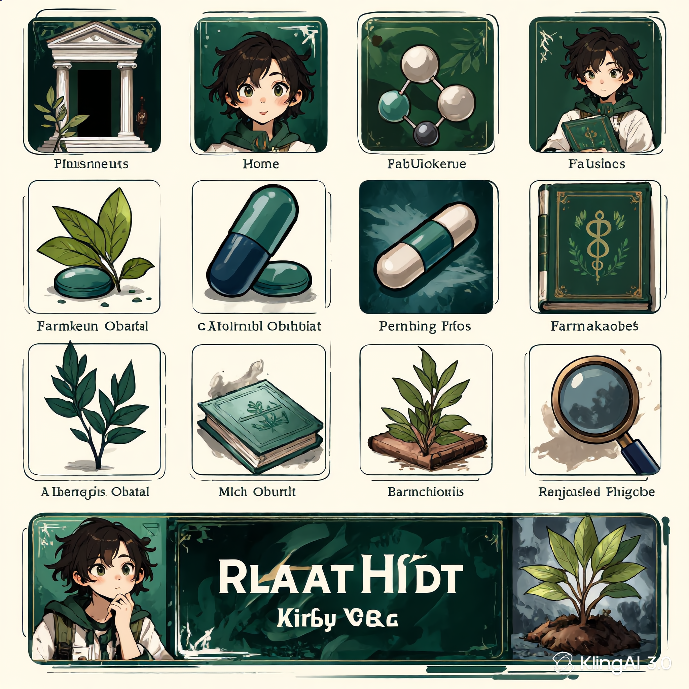
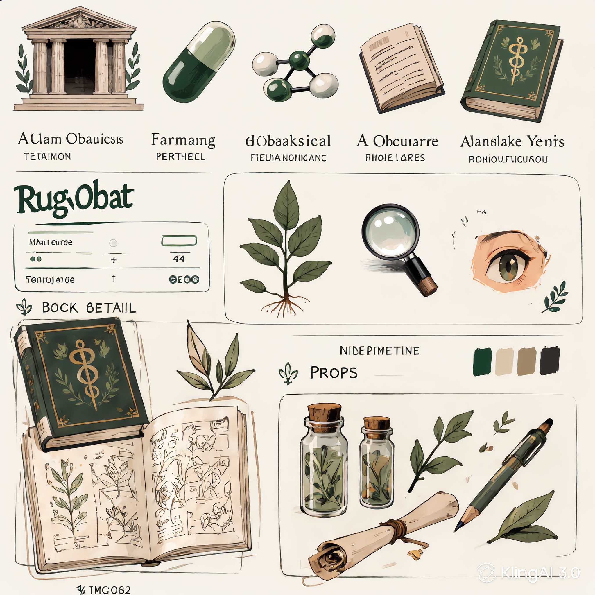

Misi Kami
Ruang Obat hadir untuk menyediakan edukasi farmasi yang akurat, mudah dipahami, dan berbasis sumber terpercaya untuk seluruh masyarakat Indonesia.

Standar Editorial
Setiap konten ditinjau oleh tenaga kefarmasian dan disusun berdasarkan referensi otoritatif: Kemenkes, BPOM, dan WHO.
Proses Review
Setiap materi melalui tahap verifikasi fakta, pengecekan sitasi, dan review medis sebelum diterbitkan.

Tim Medis
Konsultan medis dan apoteker berpartisipasi dalam peninjauan konten untuk memastikan akurasi dan keamanan informasi.
Aset Visual
Website ini menggunakan koleksi aset visual yang dirancang khusus untuk Ruang Obat, termasuk karakter Asclepios, ikon farmasi, dan ilustrasi botanis.

